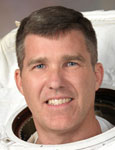

Lyndon B. Johnson Space Center
Houston, Texas 77058
|
National Aeronautics
and Space Administration Lyndon B. Johnson Space Center Houston, Texas 77058 |
 |
Biographical Data |
||
Stephen G. Bowen (CAPTAIN, USN)
NASA Astronaut
PERSONAL DATA: Born on February 13, 1964 in Cohasset, Massachusetts. Married to the former Deborah Alden; they have three children.
EDUCATION: Graduated from Cohasset High School, Cohasset, Massachusetts, 1982. Bachelor of Science in Electrical Engineering, United States Naval Academy, 1986. Master of Science in Ocean Engineering, Massachusetts Institute of Technology and Woods Hole Oceanographic Institution Joint Program, 1993.
ORGANIZATIONS: Tau Beta Pi, Phi Kappa Phi, Sigma Pi Sigma.
SPECIAL HONORS: Defense Meritorious Service Medal, Navy Commendation Medal (3), Navy Achievement Medal (2), and other service awards.
EXPERIENCE: Upon completion of the submarine training pipeline Bowen spent three years attached to USS PARCHE (SSN 683) and completed qualification in Submarines on USS POGY (SSN 647). After attending the MIT/WHOI Joint Program in Ocean Engineering he reported to USS AUGUSTA (SSN 710) for duty as the Engineering Officer. During this tour Bowen qualified for command of nuclear powered submarines. In 1997, he reported to the United States Special Operations Command (USSOCOM) in the Office of Plans and Policy and worked on the USSOCOM Future Concepts Working Group. For 9 months in 1999, Bowen was the Reactor and Propulsion inspector for the Navy's Submarine Board of Inspection and Survey (INSURV). In May 2000, he became the first Executive Officer of the Pre-Commissioning Unit VIRGINIA (SSN 774), the first of the new VIRGINIA Class submarines.
NASA EXPERIENCE: Bowen is the first Submarine Officer selected by NASA in July 2000 as a mission specialist. He reported for training at the Johnson Space Center in August 2000. Following the completion of two years of training and evaluation, he was initially assigned technical duties in the Astronaut Office Station Operations Branch. A veteran of three spaceflights, STS-126 in 2008, STS-132 in 2010, and STS-133 in 2011, Bowen has logged a total of 40 days, 10 hours, 4 minutes and 37 seconds in space, including 47 hours and 18 minutes of EVA in 7 spacewalks.
SPACE FLIGHT EXPERIENCE: STS-126 Endeavour (November 14
to November 30, 2008) launched at night from the Kennedy Space Center,
Florida, and returned to land at Edwards Air Force Base, California. It
was NASA’s fourth shuttle flight in 2008 and the 27th
shuttle/International Space Station assembly mission. Highlights of the
almost 16-day mission included expanding the living quarters of the space
station to eventually house six-member crews by delivering a new bathroom,
kitchenette, two bedrooms, an exercise machine, and a water recycling
system. During the mission, Bowen performed three EVAs (spacewalks).
STS-126 also delivered a new resident to the station, replacing Greg
Chamitoff, Expedition 17-18 with Sandy Magnus, Expedition 18. STS‑126
returned to Earth after completing 250 orbits in more than 6 million
miles.
STS-132 Atlantis (May 14 to May 26, 2010) was the 132nd space shuttle
flight, and the 32nd shuttle flight to the InternationalSpace Station.
STS-132 was launched from the Kennedy Space Center, Florida, and docked
with the space station on May 16 to deliver an Integrated Cargo Carrier
and a Russian-build Mini Research Module. During seven days of docked
operations, three spacewalks were conducted and Bowen logged 14 hours and
34 minutes of EVA time in two spacewalks. During the first spacewalk,
Garrett Reisman and Bowen installed a spare antenna and a stowage
platform. On the second spacewalk, Bowen and Michael Good replaced
batteries on the P6 Truss that stores solar energy. On the final
spacewalk, Good and Reisman replaced the last of the P6 Truss batteries
and retrieved a power data grapple fixture for installation at a later
date. The STS-132 mission was completed in 186 orbits, traveling
4,879,978 miles in 11 days, 18 hours, 28 minutes and 2 seconds.
STS-133 (February 24 to March 9, 2011), was the 39th and final mission for space shuttle Discovery. During the 13-day flight, the Discovery crew delivered the Permanent Multipurpose Module (PMM) and the fourth Express Logistics Carrier (ELC) to the station. The mission’s two space walks assisted in outfitting the truss of the station and completed a variety of other tasks designed to upgrade station systems. The mission was accomplished in 202 Earth orbits, traveling 5.3 million miles in 307 hours and 3 minutes.
FEBRUARY 2013